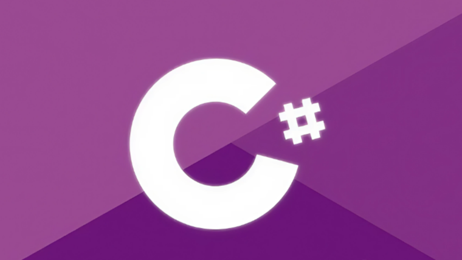

C#
Pelajari C# untuk membangun aplikasi modern di berbagai platform, mulai dari desktop hingga web. Di course ini, kamu akan memahami dasar sintaks, variabel, fungsi, serta konsep pemrograman berorientasi objek (OOP).
Daftar Materi
-
01Pengenalan C#20 min
-
02Persiapan & Instalasi20 min
-
03Dasar-Dasar C#36 min
-
04Kontrol Alur Program40 min
-
05Array & Koleksi Data12 min
-
06Fungsi (Method)40 min
-
07Konsep Object-Oriented Programming (OOP)8 min
-
08Error Handling25 min
-
09String & Manipulasi Data18 min
-
10File Handling45 min
-
11Namespace & Organisasi Kode45 min
-
12Collection & LINQ (Pengenalan Dasar)45 min
-
13Modular & Reusable Code45 min
-
14Project45 min
Detail Materi
Durasi
2.5 Jam
Total Materi
12 Modul
Tipe
Programming Language
Tentang Materi
Course C# ini dirancang untuk membantumu menguasai bahasa pemrograman serbaguna yang digunakan di ekosistem .NET. Kamu akan belajar membuat aplikasi dengan Visual Studio, memahami class, interface, dan pengelolaan data.
Cocok untuk developer yang ingin mengembangkan aplikasi profesional, baik untuk Windows, web, maupun game menggunakan Unity.
Apa yang akan kamu pelajari?
- Memahami dasar-dasar bahasa C# dan peranannya dalam pengembangan aplikasi modern berbasis .NET
- Mampu menyiapkan lingkungan pengembangan, menulis, dan menjalankan program C# dengan baik
- Menguasai struktur kode, tipe data, serta kontrol alur seperti percabangan, perulangan, dan logika dasar
- Mampu menggunakan array, koleksi data, dan metode untuk mengelola data secara efisien
- Memahami dan menerapkan konsep Pemrograman Berorientasi Objek (OOP) seperti class, object, inheritance, dan polymorphism
- Menangani error, mengelola file, serta menggunakan namespace dan struktur modular untuk kode yang lebih rapi
- Mengenal dasar penggunaan LINQ dan collection untuk memproses data dengan cara yang lebih efisien
- Menyelesaikan satu proyek aplikasi sederhana menggunakan C# sebagai penerapan dari seluruh konsep yang telah dipelajari